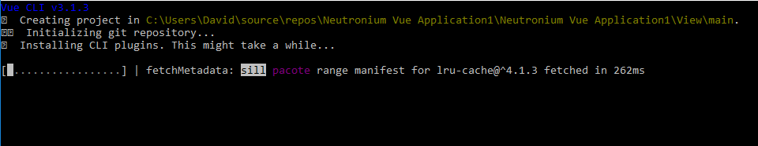
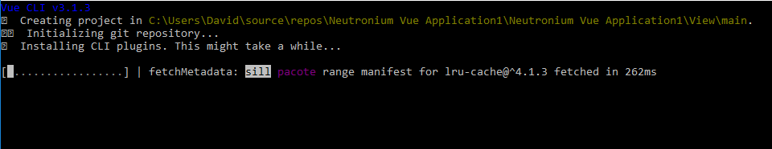
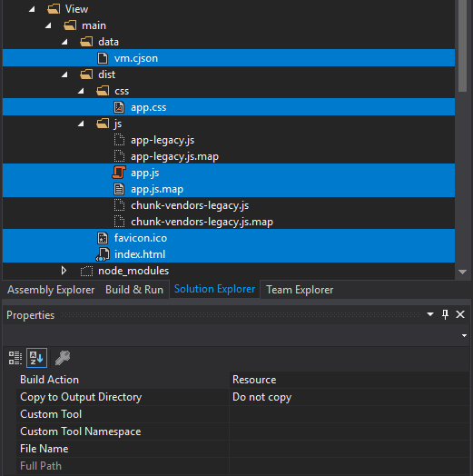
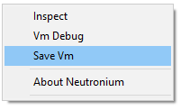

Vue cli template
Neutronium provides a vue-cli 3 plugin vue-cli-plugin-neutronium that provides many advantages to develop large project with Neutronium vue:
- During development use web-pack-dev-server and chrome to create the UI
- Use ES6, sass, less...
- Decompose your project in easy to maintain vue files during development
- Use npm to manage your dependencies
- Use Webpack build to generate all files you need to reference in Neutronium
See vue-cli-plugin-neutronium Readme for complete description.
To install neutronium vue template use vue-cli 3 If not installed, install first vue-cli:
$ npm install -g vue-cli
Then in the view folder create your project
$ vue create main
$ cd main
$ vue add neutronium
$ npm install
$ npm run serve
npm scripts
npm run serve
Debug your view in the browser. Main view model data are provided by cjson (circular JSON) file: data\vm.cjson
npm run live
Serve locally view that can be used in live reload setting with Neutronium.
npm run build
Generate files ready to be used in Neutronium in the dist folder: you have to reference these files (Content/Copy Always) in visual studio.
Step by step installation
1. Open folder where you want to install the view from VS

2. Install template
$ vue create main
 

$ cd main
$ vue add neutronium

3. Choose the correct options:

4. Begin developing the view using hot-reload (you may use atom or sublime to edit js files)
$ npm install
$ npm run serve

5. Once the view is ready build the files
$ npm run build

6. Include the files in VD
Click show all files


Include the files in project: DO NOT INCLUDE files under node_modules


Set Properties on dist files:
- Build Action:
Resource - Copy To Folder:
None .legacy.files in dist folder don't need to be included in the project

- Build Action:
7. Run C# application

Folder organization
├── data
├── dist
├── src
│ ├── asset
│ ├── components
│ ├── App.vue
│ ├── entry.js
│ ├── install.js
│ └── main.js
├── index.hml
Data: contains the vm.cjson which is the viewmodel data used during development in the browser.
dist: contains generated files to be used in Neutronium
src: contains assets (folder assets), vue components (folder components), main component: App.vue.
You should not edit entry.js nor main.js which are boilerplate files needed for the dev and production build.
Both index.html files (fromm root and dist) should not be edited for the same reason.
Main file:
App.Vue represent the main entry of the vue application, its prop ``mainViewModel``` represent the C# viewModel
Install.js file
If you need to register globally plugin in Vue instance use install.js. Example:
import Notifications from 'vue-notification'
function install(vue) {
vue.use(Notifications)
}
export {
install
}
For version >=1.0.0, it is also possible to use install.js to set Vue instance options. This is needed if you want to use mixins, or some popular tools such as vue-router or vue-i18n. To do so you need to export a vueInstanceOption function returning Vue instance option.
Example:
import VueI18n from 'vue-i18n'
import {messages} from './messages'
function install(vue) {
//Call vue use here if needed
vue.use(VueI18n);
}
function vueInstanceOption() {
const i18n = new VueI18n({
locale: 'ru', // set locale
messages, // set locale messages
});
//Return vue global option here, such as vue-router, vue-i18n, mix-ins, ....
return {i18n}
}
export {
install,
vueInstanceOption
}
Tips:
You can generate a Json from viewModel captured in a Neutronium debug session using Neutronium debug tools and use it as data.json in order to create the view with a realistic ViewModel.
